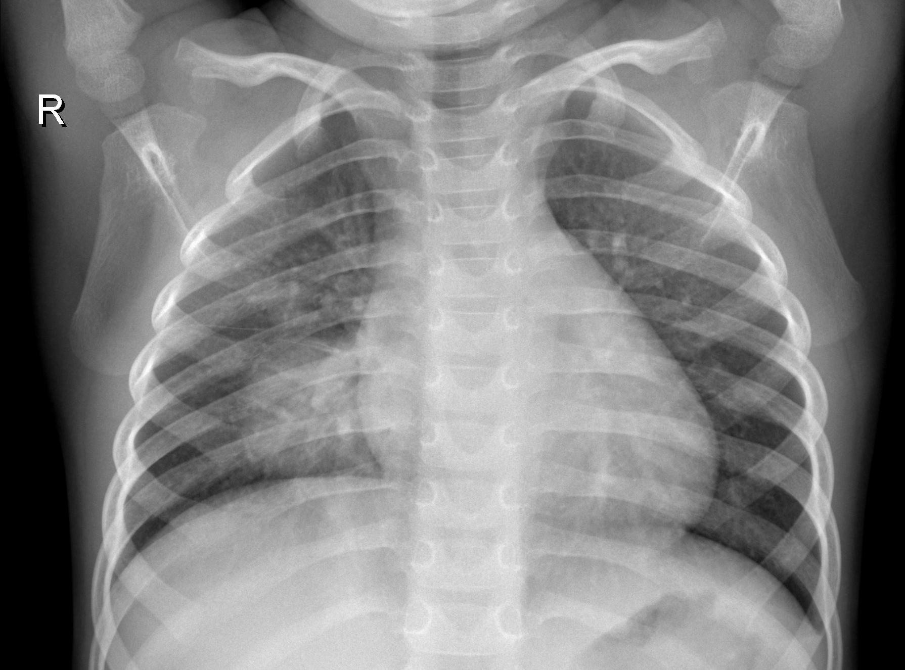

Project Overview
The goal of this project was to train a binary image classification model capable of distinguishing between chest scans showing pneumonia and scans classified as normal. I built the model as part of a deep learning lab and used a full workflow that included importing the data, checking class balance, displaying sample images, preparing image datasets, defining a CNN architecture, training the network, and evaluating performance on unseen test images.
Dataset & Image Exploration
The dataset was organised into train and test folders, each containing two classes: pneumonia and normal. I first verified the class counts to understand the data distribution before training the network.
- Training pneumonia images: 100
- Training normal images: 100
- Testing pneumonia images: 50
- Testing normal images: 50
Because the dataset was balanced across both classes, accuracy was a reasonable metric for assessing model performance.
What I did here
- Loaded the zipped dataset into Google Colab
- Extracted the files and created a directory path using
pathlib - Counted class images using file path patterns
- Confirmed the training and testing structure before modelling

Sample Pneumonia Scan
Chest X-ray showing pneumonia. Notice the cloudy/opaque areas in the lungs, indicating infection and inflammation.

Sample Normal Scan
Normal chest X-ray. The lungs appear clearer with no significant white/opaque regions, indicating no visible infection.
Preprocessing Pipeline
Image Size
All scans were resized to 256 × 256 so the model received a consistent input shape during training.
Batching
A batch size of 16 was used so the model could process multiple images per training step efficiently.
Normalisation
Pixel values were scaled from 0–255 to 0–1 using a rescaling layer to improve training stability.
image_dataset_from_directory. This allowed me to monitor how well the model learned beyond the training samples during fitting.
Model Architecture
CNN Structure
Normalised incoming image pixels to the 0–1 range.
Extracted lower-level image features such as edges and local patterns.
Learned more complex visual structures from the chest scans.
Converted extracted features into a form suitable for classification.
Produced a binary output representing the probability of pneumonia vs normal.
Training Setup
- Optimizer: Adam
- Learning rate: 0.00001
- Loss function: Binary Cross-Entropy
- Metric: Accuracy
- Epochs: 29
I selected a binary classification output because the problem involved only two target classes. The sigmoid activation made the final layer suitable for classifying each image into one of the two groups.
Results & Interpretation
Training
98.1% accuracy by the final epoch, showing the CNN learned the training data very well.
Validation
95.0% validation accuracy, indicating strong performance on the held-out validation split during training.
Testing
79.0% accuracy on unseen test images, showing that the model performed reasonably but generalised less strongly than it did on training and validation data.
What these results suggest
- The model learned useful image patterns linked to pneumonia detection.
- The gap between training and test performance suggests some degree of overfitting.
- The relatively small dataset size likely limited generalisation on unseen images.
- This project highlighted the importance of balancing model fit with real-world performance.
What I learned
- How to build an end-to-end computer vision workflow in TensorFlow/Keras
- How to load and preprocess image datasets efficiently in Colab
- How CNN layers extract features for image classification
- How to monitor training, validation, and test accuracy separately
- How to recognise signs of overfitting and think critically about model generalisation
Portfolio Summary
Pneumonia Detection using Deep Learning
Developed a convolutional neural network in TensorFlow/Keras to classify chest scan images as either pneumonia or normal. The project involved dataset exploration, image preprocessing, class balancing checks, sample image inspection, CNN design, model training, and final evaluation on unseen test data in Google Colab. The final model achieved 98.1% training accuracy, 95.0% validation accuracy, and 79.0% test accuracy, demonstrating strong learning on the training set while also highlighting the importance of generalisation when working with smaller medical imaging datasets.